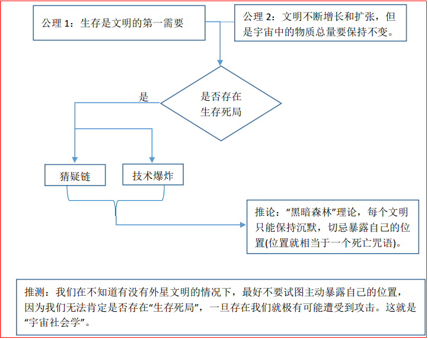

第二部：黑暗森林
本部作品名称的由来：取自八十年代流行过的一句话："城市就是森林，每一个男人都是猎手，每一个女人都是陷阱"。
读后感：
在本部中，从一开始地球得知三体舰队准备入侵地球，选出四个面壁人，到每个面壁人思考和部署自己的作战战略，再到各个人最
后的发展结果，情节安排得非常巧妙。量子舰队计划、水星坠落连锁反应计划、思维提升计划、宇宙社会学与黑暗森林理论 四大方
案脑洞较大的是第2和第4种，这种思索很有点推理的味道。
特别惊叹于作者所提出的这一套 宇宙社会学与 "黑暗森林" 理论，如果基于两个基本公理 再加上 宇宙间的各文明之间存在生存死局，
那么猜疑链和技术爆炸就有了产生的基础，那么我们在这个黑暗森林里最好一直保持沉默。因为一旦暴露了自己的位置，就等于自杀。
这也是最后罗辑得以威胁三体人的重要手段。位置信息就如同咒语，一旦被广播出去，就等于中了死亡之咒，文明也就必死无疑。
整个理论发展框架如下：

= 序章
由 褐蚁 为引，从人类社会所处的微观和宏观两个角度引出主题。
褐蚁 感受到了蜘蛛和人类的存在。这两个人类分别是：罗辑 和 叶文洁。
叶文洁 给罗辑提出来，让他研究 宇宙社会学 —— 假设宇宙中分布着数量巨大的文明，它们的数目与能观测
到的星星是一个数量级的，
很多很多，这些文明构成了一个总体的宇宙社会，宇宙社会学就是研究这个超级社会的形态。
宇宙社会学 比起 人类社会学 会呈现出更清晰的数学结构。把宇宙中的那些文明看成一个个拥有参数的点。
宇宙社会学 的两大公理： Axiom-1. 生存是文明的第一需要； Axiom-2. 文明不断增长和扩张，但是宇宙中的物质总量要保持不变！
叶文洁又给出了两个名词：猜疑链 和 技术爆炸。
原来褐蚁攀爬的是 杨东的墓碑(杨东之墓 1972)。
视线转向 第二红岸基地的创建者伊文斯，这里在回忆他以前和三体人之间关于"思维和语言"之间的区别的对话。
揭示：三体人的思维对外界是完全暴露的，他们不可能进行隐藏，也理解不了人类怎么能把自己的思维隐藏起来。
三体人所交流的一切都是真实的，不可能欺骗不可能撒谎，所以他们之间不可能产生复杂的战略思维！
三体人 的"想"和"说"就是完全等价的，他们想的东西都会直接暴露给别的三体人，他们相互之间完全没有秘密, 没法隐藏！
从这里也能看出三体人也不是所谓的进化的多么高级，某些方面他还不如地球人，他们连自己的思想都没法隐藏，更就不会有什么谋略了！
= 上部 面壁者
- 新人物 吴岳(舰长) 和 章北海(政委)，他们正在研究自己所负责的航空母舰的舰体。
- 组织名称对照表 —— NMD: 国家导弹防御系统，ETO: 地球三体组织，PDC: 行星防御理事会。
- 各国政府把已有的 NMD系统的拦截方向由地球的各个大洲 转向了太空，从而建立起了人类的第一个 地球防御系统！
- 新人物 张援朝 在他工作了四十多年的化工厂退休了。邻居 杨晋文(老杨) 是一个已经退休的中学教师。
老杨安慰道："六十岁和十六岁一样，是人生最美好的年龄，
在这个岁数上，四五十岁时的负担已经卸下，七八十岁时的迟缓和病痛
还没有来临，是享受生活的时候。"
新人物 苗福全(山西煤老板)。
- 破壁人二号， 面壁计划
把三体人当成主的破壁人被要求执行伊文斯发的邮件里的任务。
- 常伟思 领头组建太空军。吴岳 和 章北海 被召集在这个军队里。
- 联合国召集会议讨论逃亡主义，逃亡主义又引发了一轮"科技公有化"运动，进而在普通民众间又引发出了一场关于"逃亡大争辩"。
联合国最终决议，谁造诺亚方舟就用导弹把它打下来！为的是既然不能都活那就谁也别活！
- 史强 带着 罗辑在飞机上不知道要把他送到哪里，干什么。
只是想要传授他一点 审讯的技巧：比如最基本的技巧 -- 1. 拉单子 2. 黑白脸！
(最文的) (半文半武的)
真正的审讯也是一个大工程，是很多技巧的一种综合。
- 罗辑的女朋友白蓉是一个作家，罗辑对白蓉写的小说时常提出自己的意见，甚至亲自帮她修改。
白蓉发觉他很有文学才华，并赞扬他所创造的文学形象的能力是一流的！在白蓉过生日的时候，她向罗辑要了一个生日礼物：
一本描述自己心目中最美丽的女孩儿的小说，可以完全离开现实去创造这样的一个天使，唯一的依据就是对女性最完美的梦想。
- 白蓉给罗辑在文学创作过程中的困惑的解答：
你的方法不对，你是在作文，不是在创造文学形象。要知道，一个文学人物十分钟的行为，可能是她十年的经历的反映。
你不要局限于小说的情节，要去想象她的整个生命，而真正写成文字的只是冰山的一角。
- 罗辑经过白蓉的指点，把自己想象中的小说人物变活了。
罗辑说："我以前总是以为，小说中的人物是受作者控制的，作者让她是什么样儿她就是什么样儿，作者让地干什么她就干什么，
就像上帝对我们一样。"
白蓉答："你错了。现在你也知道了，这就是一个普通写手和一个文学家的区别。文学形象的塑造过程有一个最高状态，在那种
状态下，小说中的人物在文学家的思想中拥有了生命，文学家无法控制这些人物，甚至无法预测他们下一步的行为，只
是好奇地跟着他们，像偷窥狂一般观察他们生活中最细微的部分，记录下来，就成为了经典。"
- 史强他们在执行一次护航任务，看来就是为了护送罗辑，虽然暂时还不知道他们的目的。
最终罗辑被领到了 联合国大会堂，这里进行的是 行星防御理事会第十九次会议的最后议程：公布面壁者名单，并宣布面壁计划开始。
= 面壁计划
各国都注意到以下事实：在最初两个智子出现之后，已有越来越多的证据表明，更多的智于正在不断地到达太阳系，进入地球，
这个过程到现在仍在持续中。所以，对于敌人而言，现在的地球已经是一个完全透明的世界，对于他们，这个世界的一切都像一
本摊开的书那样随时可供阅读，人类已无任何秘密可言。面壁计划的创始者们认为，在主流防御计划之外，应该平行地进行另外数项战略计划，这些计划对敌人是不透明的、是秘密。最初曾经设想过多种方案，但最后确定只有面壁计划是可行的。值得注意的是：到目前为止，人类还是有秘密的，我们的秘密就是我们每个人的内心世界。
面壁计划的基础：智子不能读出人的思维。
面壁计划的核心：选定一批战略计划的制定者和领导者，他们完全依靠自已的思维制定战略计划，不与外界进行任何形式的交流，计划的真实战略思想、完成的步骤和最后目的都只藏在他们的大脑中，我们称他们为面壁者，这个古代东方冥思者的名称很好地反映了他们的工作特点。
【面壁计划 是人类企图用个人的全封闭战略思维来对抗智子的监视】
= 面壁者所承担的，将是人类历史上最艰难的使命，他们是真正的独行者，将对整个世界甚至整个宇宙，彻底关闭自己的心灵，他们
所能倾述和交流的、他们在精神上唯一的依靠，只有他们自己。他们将肩负着这伟大的使命孤独地走过漫长的岁月，在这里，让我
代表人类社会向他们表达深深的敬意。
= 最后联合国行星防御理事会 选定了四名面壁者：
1. 弗里德里克·泰勒(美国国防部部长)：主要观点是 技术的发展只会降低大国的优势；
2. 曼努尔·雷迪亚兹(委内瑞拉现任总统)：成功的利用技术战败了美国的侵略军；
3. 比尔·希恩斯(科学家+欧盟政治家)：研究发现，大脑的思维和记忆活动是在量子层面上进行的，而不是分子层面上的活动；
4. 罗辑(博士)：是一位以前学天文学后来搞社会学的教授，被选定的 原因暂时不明。
不知不觉间，他走到了草坪上，来到一尊雕塑前，无意中扫了一眼，他看到那是一个男人正在用铁锤砸一柄剑，这是前苏联政府
送给 联合国 的礼物，名叫“铸剑为犁”。
- 视线转向 哈勃二号空间望远镜的发射现场。林格是哈勃二号的设计者，菲兹罗是征用哈勃二号的军方代表。
公众认为哈勃二号能看到三体舰队。
= 此时的史强已经隶属于国家地球防务安全部，专门负责保护 面壁者 罗辑的安全保卫工作。
罗辑不明白为什么自己会被选做面壁者，罗辑就悟出了面壁者这个身份的实质：正如萨伊曾说过的，这种使命在被交付前，是不可
能向要承担它的人征求意见的；而面壁者的使命和身份一旦被赋予，也不可能拒绝或放弃。这种不可能并非来自于谁的强制，而是
一个由面壁计划的本质所决定的冷酷逻辑，因为当一个人成为面壁者后，一层无形的不可穿透的屏障就立刻在他与普通人之间建立
起来，他的一切行为就具有了面壁计划的意义，正像那对面壁者的微笑所表达的含义：我们怎么知道您是不是已经在工作了？
= 面壁者 所拥有的权利和资源是无法让别人理解的，其他三位面壁者都在组建自己的参谋部。
而罗辑则直接去问PDC的轮值主席要了一个自己想象中的最美的地方。到目前为止，PDC还是不能理解罗辑想要干什么，但对罗辑
的表现却最为满意。
= ETO组织中的降临派为了帮助他们所谓的主，也采取了相应的【破壁计划，给每个面壁者指定一个破壁人，破壁人的任务，就是在
智子的协助下，通过分析每一个面壁者公开和秘密的行为。尽快破解他们真实的战略意图。】
= 面壁者 雷迪亚兹 想出的战略思维是要用核弹作为武器；面壁者 泰勒 面见了几个从太空中回来的机组成员以及国际空间站的学者，
他想建立一支独立的太空力量，以宏原子核聚变为武器；面壁者 希恩斯 想的是："既然自己想不出那个计划，就帮助别人(后代人)
想办法"，所以他想借助技术加速人脑的进化，目前要做的是从根本上了解人类大脑思维的机制从而提升整个人类的智力。
- 视线转向 史强和他的儿子史晓明，他的儿子因为诈骗而被捕。
= 视线转回到 面壁人罗辑，罗辑创造了两个与面壁计划相关的词语：1. 对面壁者的笑； 2. 面壁计划的一部分(简称：计划的一部分)。
罗辑的计划好像已经在开始了，但是我是无法理解他这个计划到底是什么，他说他在等着大史过来继续他的计划。
【可能就是要这样，让其他人完全猜不透他到底想干什么，这就是一个面壁者本身应有的职责。】
= 泰勒 来到了神风特攻队纪念馆，他想要恢复神风特攻队组建一支太空敢死队。
雷迪亚兹 的计划中的那个特大当量级别人核聚变武器，已然就是相当于要建设一个新的类似于太阳这样的恒星。
= 史强终于来到了罗辑所在的地方。原来罗辑是想要史强帮助自己寻找自己梦中的女孩。
史强按照罗辑的描述，绘制出了他心目中的梦中情人，然后让罗辑感到五体投地，大史却来了句："没那么玄乎，都是男人嘛。"
以我这大半辈子的经验告诉你：什么样的人都有。告诉你吧，老弟，什么样的都有，包括完美的人和完美的女人，
只是你无缘遇到。因为你心中完美的人在别人心中不一定完美，就说你梦中的这个女孩儿，在我看来她有明显的……
怎么说呢，不完美的地方吧，所以找到的可能性很大。
= 史强为罗辑找他的梦中情人。而泰勒则去视察新成立的"太空军"，泰勒与章北海谈论了之后虽然没能从他那里得到什么更多的东西，
但是感觉到这个人的思想很深，一眼看不透。
最后找到了那个女孩，名字叫庄颜，是中央美术学院的本科毕业生，罗辑觉得这就是自己理想中的完美女孩，单纯天真。
但是却被告知史强 因为之前抓捕地球三体组织的活动而遭受到核辐射，而感染了白血病，基本上算是没救了，罗辑很难过。
他之后告诉庄颜："你知道面壁计划是什么，它的成功依赖于它的不可理解，面壁计划的最高境界，就是除了面壁者本人，地球和
三体世界都无人能够理解它。所以，庄颜，不管你的工作多么不可思议，它肯定是有意义的，不要试图去理解
它，努力去做就是了。"。
他给她下的任务就是："使自己幸福快乐"。并说："你成为世界上最幸福最快乐的女孩儿，是面壁计划的一部分"。
= 视线转向泰勒，他此时面见了 本拉登，并送给他一部由美国科幻作家 区萨克 · 阿西莫夫 的名作《基地》，他想要本拉登把
“基地组织”保留下来，最后希望使之成为太空军的一部分，进而用于对抗三体人的入侵。
泰勒看重的是：基地组织是人类少有的 能用生命作为武器打击敌人的武装力量。
本拉登却说：我们这个组织之所以存在并不是因为有谢顿那样宏伟的目标，你没办法让一个理智正常的人相信那个并为之献身，
组织的存在就是因为有了那东西，它是组织的空气和血液，没有它，组织将立刻消亡——这就是 仇恨，对西方的仇恨。
= 视线转回到罗辑，他带着庄颜一起来到了卢浮宫的大门。进了卢浮宫，他们开始欣赏这些人类文明艺术的瑰宝，
卢浮宫的三大镇宫之宝：蒙娜丽莎(油画)、维纳斯(雕像) 和 胜利女神(石雕)。
- 看着 蒙娜丽莎的微笑，庄颜想到了 "她与面壁者之间的关系 —— 能不能找到一种交流方式，只有人类才能相互理解，智子永远理解
不了，这样人类就能够摆脱智子的监视了。"
后来罗辑就和庄颜一起练习“用眼神说话”。
= 视线转向 哈勃二号空间望远镜的发射现场，菲兹罗想要开始借助哈勃望远镜 观察"三体世界"。
没想到居然真的观测到了正在向地球进军的三体舰队，它证实了三体入侵的真实性，也熄灭了人类最后的幻想。
= 中部 咒语
= 时间恍惚间过去了5年，时间到了危机纪年的第8年。
= 视线首先聚集在 面壁者泰勒身上，泰勒在紧张焦急的状态下，遇到了自己的破壁人。
在与破壁人谈完之后，泰勒来找罗辑谈谈自己对于"面壁计划"的想法，罗辑这里简直就是一个人间净土，人间天堂，罗辑娶了庄颜
为妻，并生了一个孩子过着与世隔绝的生活。
泰勒 讲述了破壁人是如何一步步的将自己的思想看透的，揭秘："泰勒想要把这支神风特攻队 或 太空基地组织 建立起来，然后借助
宏原子武器将他们杀死，然后得到一支量子舰队，进而得以和三体人决一死战"。
泰勒深知自己的战略已经被破壁人看透，但是地球上没有任何人相信自己说的话，从而撤掉自己"面壁人"的身份，他感到自己已经
陷入面壁人的 逻辑怪圈，永远也无法脱身，所以最终 泰勒 选择自杀来结束自己的生命。
【至此：第一个破壁人已经出现，面壁者 泰勒 也因此选择了自杀！】
= 而在太空军这边由于基础科学在近几年之内没有丝毫进展，导致新一轮的失败主义复燃，章北海提议要 "增援未来"。但是还能得到
批准。
= 罗辑经历了泰勒对自己的描述之后，向庄颜表述了自己执行面壁计划的想法 ——"太阳和宇宙都有死的那一天，所以对于三体危机， 我们应该要完全抛弃烦恼，用剩下的时光尽情的享受生活"。
= 联合国行星防御理事会(PDC) 举办第八十九次面壁计划听证会，
面壁者希恩斯 谈到自己的 人脑解析摄像机，
面壁者雷迪亚兹 谈到自己的 恒星型核弹模型。
这两个计划都限于科学技术的发展，传统的集成电路以及冯诺依曼架构的计算机已经发展到接近鼎峰，人类必须得打破这一结构，
产生新一代的计算机—— 量子计算机。但是由于智子的存在，量子计算机的发展受到了极大的阻碍。
所以最后这两位面壁者都决定 自己要进入冬眠，以等待科技的发展。
【至此：两个面壁者选择进入冬眠状态，等待科技的发展！】
= 视线转回到罗辑，他做了一个孤独的梦，最后醒来发现自己这五年来的幸福生活好像真的就是一场梦。
联合国秘书长萨伊像罗辑说，他的妻子和儿子都会在末日等他，他需要工作了。
联合国秘书长 终于 向罗辑表面了选中他为面壁者的原因："因为在全人类中，罗辑是唯一一个三体文明要杀的人"。
“悄无声息地杀掉罗辑”正是之前破壁人收到的必须执行的那个加密邮件中所说的命令！虽然到现在为止大家都还不能理解为什么要
执行这个命令。
= 此时的罗辑才回想起来："自己曾经打算从事 宇宙社会学 的研究"。
罗辑博士，我们现在的谈话只能是坦率的。据我们了解，你作为一名学者是 不合格 的，你从事研究，既不是出于探索的欲望，
也不是出于责任心和使命感，只是把它当做谋生的职业而已。通常情况下，你这样的人是 不可能承担任何重要职责 的，但现在
有一点压倒了一切：三体世界怕你。请你做自己的破壁人，找出这是为什么。
= 视线再度转回到 章北海所在的 太空军。在确认三体舰队正在到来的五年时间里，航空技术有了一点最新的突破 —— 空天飞机！
可以作为正常的飞机在大气层之间飞行，也可以在大气层顶端通过火箭加速器飞到太空成为航天飞机。
= 太空军 第一阶段的两项关键技术：太空电梯 和 可控核聚变技术。章北海和丁仪博士等人一起乘着空天飞机来到了太空。
= 视线转向在研究如何观测三体舰队的 菲兹罗将军和林格博士，他们想要通过哈勃望远镜再次捕捉到三体舰队的足迹。
= 视线转向罗辑，此时的他首先要想明白的就是："为什么自己能被选为 面壁人，为什么三体人一定要杀死自己"。
他想起来自己在九年前与叶文洁进行的那次关于"宇宙社会学"的交谈。
【拓展】语文考试的经验：先看卷子最后的作文题，然后再按顺序答卷，这样在答卷过程中，会下意识地思考作文题，很像电脑中后
台执行的程序。
= 罗辑更换了工作地点，然后召来林格博士询问他天文学方面的知识，同时要求PDC召开大会。
= 视线转向 虚拟三体世界，那些地球上的三体组织人员再次收到 对面壁者罗辑的 第二道诛杀令！
= 罗辑在开会过程中，提出了一个战略计划："简而言之，就是通过太阳的电渡放大功能，向宇宙中发送一份信息，信息只包括三幅简
单的图形，还有一些附加信息，表明这些图形是由智慧体发送而不是自然形成的。" —— 这是一句咒语。
三年多后，菲兹罗等人通过哈勃望远镜再次捕捉到了四年前三体舰队穿越星云时的足迹，此时看到的是三体舰队向太阳系又额外的
发射了十个探测器。
= 危机纪年第20年，两个休眠的面壁者(希恩斯和雷迪亚兹)被唤醒。
1. 希恩斯 会见 太空军的常伟思，说他已经发现了“思维做出判断的机制，并且能够对其产生决定性的影响”。这种发现可以极大的
帮助太空军改善 失败主义情绪蔓延的现状。他们成功研制了一种叫做: 思维钢印 的设备，可以改变人的思维所作出的判断。
随着这种设备的自愿使用性被确定，太空军中越来越多的人开始使用这个设备驱走自己内心中的失败主义情绪。随后希恩斯和他的
妻子也就安心的冬眠了，等待着进入未来。
2. 雷迪亚兹这边开始进行 恒星级氢弹 的试验。恒星级氢弹的试验场地只能在太空中进行，而且最理想的试验位置是在月球背面。
但是根据雷迪亚兹的建议最终选择在 离太阳最近的水星上进行了试验。
当试验成功结束之后，雷迪亚兹与自己的破壁人见面了。
破壁人揭露出了雷迪亚兹的真实意图：这就是同归于尽战略。当一切都准备完毕，所有氢弹都已在水星上就位时，您将以此来要挟
三体世界，最终使人类赢得胜利。通过在水星上放置大量的氢弹，爆炸后使其速度降低，然后被太阳的引力吸过去最终形成 行星撞
恒星的现象，然后紧接着 一系列的连锁反应会导致 金星，地球，火星，木星，土星，天王星，海王星等整个太阳系的行星全部撞向
太阳，最终地球人和三体人就会同归于尽。
= 之后 PDC 召开了新一次的 面壁计划听证会，很显然这个破壁人也成功破解了雷迪亚兹的真实战略，他用计谋使得自己得以脱身，
但是没想到回到自己的祖国后，却被众人唾弃丢石头砸死了。
【至此：第二个破壁人已经出现，面壁者 雷迪亚兹 因这种反人类的行径被自己祖国的人民杀死了。】
= 至此，交代了其中很多其他人物的命运发展，包括：常伟思、吴岳；萨伊、迦尔宁、坎特；林格、菲兹罗；丁仪 等。
从上世纪八十年代开始至三体危机出现时结束的美好时光，被后世人称为“黄金时代”，经历过这段美好岁月的老人像反刍动物似的
不断把那段记忆吐出来，甜蜜地咀嚼，最后总是加上一句：“唉，那时咋就不懂得珍惜呢？”而听他们讲述的年轻人目光中充满嫉妒，
同时也将信将疑： 那神话般的和平、繁荣和幸福，那世外桃源般的无忧无虑，是否真的存在过？
人类文明的航船已经孤独地驶到了茫茫的大洋中，举目四望，只有无边无际的险恶波涛，谁也不知道，彼岸是不是真的存在。
= 下部 黑暗森林
= 转眼间 200多年 过去了，现在已经到达危机纪年205年。冬眠了185年的罗辑终于苏醒了，而且由基因炸弹所导致的疾病也在这未来
世界里治好了。
【这里 对 未来世界 进行了想象】
= 未来世界里城市变成了森林。城市的建筑就像叶子似的挂在这些树枝上，城市的地址真的就是 XX 树 XX 枝 XX 叶。
城市建立在地下。在罗辑休眠的这段时间里，人类经历一个大低谷时代，这个时代结束了之后，全世界的城市都在往地下发展。
罗辑苏醒时所处的位置就是在地下1000多米深的位置，他只能对这新世界感到震惊。
【联想：《万物简史》地下土壤岩石层分布为：0-40km地壳，40-2700km地幔，2890-5150km外核，5150-6371km内核】
新世界还是处在地球土壤的外层地壳中。
= 罗辑在接待室见到了 舰队联席会议特派员本·乔纳森，他邀请罗辑一起参加面壁计划的最后一次听证会。
在这次会议上，面壁计划被取消了，罗辑和希恩斯也恢复了普通人的身份。会议结束后，罗辑没想到自己竟然可以和史强碰面，两个
同时代过来的人都刚到莫名的亲切。
= 希恩斯 没有想到自己的妻子 山杉惠子 竟然是自己的破壁人。
她说希恩斯是 一个根深蒂固的失败主义者，一个坚定的逃亡主义者，不管是在成为面壁者之前还是之后，他的唯一目标就是实现人类
的逃亡。与其他面壁者相比，你的高明之处不在于战略计谋的欺骗，而在于对自己真实世界观的隐藏和伪装。
所以如果思维钢印一直存在着，那么一个持有绝对失败主义信念的阶层或组织就会一直存在着。
【至此：第三个破壁人已经出现，她想要揭露面壁者希恩斯的真实战略意图 —— 就是为了发明"思维钢印"。】
= 视线再转回到罗辑所处的未来世界，罗辑赞叹自己所看到的一切："这种把现代的喧嚣和拥挤悬在高空，让地面回归自然的城市设计"!
= 200年之后的未来世界中的许多看起来很高端的现象，其实有一些不过是低端科技的发展的结果，并不是人类在基础学科研究中取得了
突破性的进展。比如：1.在罗辑看来不耗油也不耗电的设备，其实是由于可控核聚变技术发展把 无线充电 技术变成现实的结果；
2. 合成粮食技术，不过是对庄稼的基因改造计算的发展结果。人类的基础科学研究似乎仍然处于被 智子 锁死的状态。
= 罗辑在得知自己被宣布解除面壁人身份的时候，感觉身上的担子顿时就没有了，人轻松了很多。
没想到在自己本以为可以安全悠闲的散步的时候，却再一次的遇到了致命式的交通事故。在这之后，罗辑又陆续的被致命袭击了六次，
幸好有史强的保护，使得他得以每次都平安脱险。
原来在这个未来世界中，到处都充斥着软件系统，进而有一种叫做 Killer2.5 的专门针对罗辑的病毒也被曾经的 ETO 组织开发出来，
Killer2.5 的任务就是刺杀罗辑。
= 视线转到章北海。
此时的章北海与未来世界里的亚洲舰队首长进行了对话，由于 思维钢印所产生的钢印族 到底是否存在还不清楚，所以必须把
集中型指挥系统的舰长权限交给可靠的人。这群可靠的人就只能是【章北海等这些 支援未来计划的太空军】。
这种被技术固化的信念，是百分之百的坚定不移，这样的信念必然产生相应的使命感。失败主义与逃亡主义是紧密相联的，
如果钢印族真的存在，那么他们 必然把实现宇宙逃亡作为自己的终极使命，而为了实现这个目标，必须深深地隐藏自己的
真实思想。
接着 首长带着章北海 来视察 "自然选择"号太空舰，章北海看到了舰长 东方延绪。
= 视线转回罗辑。此时的罗辑和史强都从未来地下世界 回到了 地面。
地面上的天空是黄色的，沙土覆盖着地面的一切。
=== 回忆 地球所经历的那段“大低谷时期”============
冬眠后的十几年里，日子过得还行，但后来，世界经济转型加速，生活水平一天天下降，政治空气也紧张起来了，真的感觉像是战争
时期了。不是哪几个国家，全球都那样儿，社会上很紧张，一句话说不对，就说你是 ETO 或 人奸，搞得人人自危。还有黄金时代的
影视，怕消磨大家的斗志，开始是限制，后来全世界都成禁品了。
再到后来，事情就更加不妙了，因为经济转型以及环境恶化，全世界都开始挨饿。当时的环保法令倒还都有，但那正是悲观时期，人
们普遍都有一个想法：环保有屁用？就算把地球保成一个花园儿，还不是留给三体人？到后来，环保甚至与ETO划上等号，成了人奸
行为，像绿色和平组织这类的。都给当做ETO的分支镇压了。太空军工使得高污染重工业飞速发展，环境污染是制止不了了，温室效
应，气候异常，沙漠化……唉。
随着大片的沙漠化，农业开始大减产，储备粮耗光，然后就到了大低谷了。这个时候，真可谓是 饥饿大进军，几千万人逃荒，太平原
上沙土遮天，热天热地热太阳，人一死，立马就给分光了…… 真他妈是人间地狱，影像资料多的是，你们可以自己看，想想那个时候
都折寿啊。大低谷持续了半个世纪吧，总共持续了大约五十来年，世界人口一下由八十三亿降到三十五亿(减少了一半多)！
||
后来嘛，有人想开了，越来越多的人想开了，都怀疑即使是为了末日战争的胜利，付出这么多到底值不值。当时有些人就在想着:
“ 不管未来如何，当前的日子才是最重要的。" 当然，在当时这想法是大逆不道，典型的人奸思想，但越来越多的人都这么想，很快
全世界都这么想了，那时流行一句口号，后来成了历史的名言—— 给岁月以文明，而不是给文明以岁月！
||
再后来，新上来的各国政府都 全部中止了太空战略计划，集中力量改善民生。当时出现了一个很关键的技术：利用基因工程和核聚变
的能量，集中大规模生产粮食，结束了靠天吃饭的日子，这以后全世界才不再挨饿。接着一切都恢复得很快，毕竟人少了，只用二十
多年时间，生活就恢复到了大低谷前的水平，然后又恢复到黄金时代的水平。
人类铁了心地沿着这条舒服道儿走下去，再也不打算回头了。
||
再后来，原本世界各国都打算平平安安过日子，把三体危机的事儿抛在了脑后，可你想怎么着，一切都开始飞快进步，技术进步最快，
大低谷前太空战略计划中的那些技术障碍竟然一个接一个都突破了！【这就是：人性的解放所必然带来的科学和技术的进步。】
大低谷后大约过了半个世纪的平安日子吧。全世界又想起三体入侵这回事了，觉得还是应该考虑战争的事，况且现在人类的力量与太
低谷前不可同日而语了。于是又宣布全球进入战争状态，开始建造太空舰队。但这次和以前不一样，各国都在宪法上明确：太空战略
计划所消耗的 资源应限制在一定范围内，不应对世界经济和社会生活产生灾难性的影响。太空舰队就是在这一时期成为独立国家的。
=============================================
= 文明免疫力
就是说人类世界这大病一场，触发了文明机体的免疫系统，像从三体危机出现至大低谷结束的这一段前危机时期 那样的事儿再也不会
发生了，人文原则第一，文明延续第二，这已是当今社会的基础理念。
= 视线转到章北海。
东方延绪 向章北海演示如何启动 "自然选择号"宇宙舰，其中有一个在最高加速度下的 深海状态，为了避免过大的重力对人体造成伤害，
人必须处在一种叫做 "深海加速液" 的液体中，才能进行 '前进四'推进。
= 视线转到肯博士和罗宾逊将军。
他们处在 "林格-菲兹罗监测站"，这个监测站处在小行星带外侧的太阳轨道上。监测站的主要用途还是监视三体舰队。
望远镜的负责人一直延用着林格和斐兹罗这样的组合：首席科学家来自地球，军事负责人则来自舰队。
每一届组合都有着与林格和斐兹罗之间相似的争论。
他们发现："三体探测器熄灭了，也就是说它的发动机关闭了。" 这也导致人类对三体探测器的追踪，丢失了目标。
= 人类为了缓解地球温室效应，执行了一个“雾伞计划”, 这个计划是用核爆炸在太空中蒸发和扩散油膜物质，在太阳与地球之间形成
一团“油膜尘埃”，降低太阳对地球的辐射，从而达到缓解地球温室效应的目的。
= 人类第一次看到了来自外星文明的探测器，指令长明白了：这团比太阳还大的尘埃云是白造了，三体探测器又启动了它的发动机，
继续减速，它不打算掠过太阳系，它将留在这里。
= 视线转到章北海。
这里正在进行的是 东方延绪 和 章北海的舰长权利交接仪式，东方延绪说出了自己的口令：
"Men alwaye remember love because of romance only"，没想到这恰巧是一个香烟品牌 "万宝路" 的英文含义。
章北海在拿到执行舰长的权限之后，做的第一件事居然是：使得 '自然选择号' 进入 '前进四' 状态，全舰人员立刻进入深海状态。
当章北海完成'前进四'的加速任务时，亚洲舰队统帅部才确认了这个令人难以置信的事实："自然选择号" 叛逃了！
其他舰队此时能做的只能是追击它。但是已经追不到了，当 "自然选择号"停止加速时，飞船已经到了五百万公里之外，然后
章北海 与 亚洲舰队 取得联系。章北海坚称自己“逃离是事实，但没有背叛”，原来章北海就是那个隐藏很深的 "钢印族"！
= 章北海的失败信念并不是来自 思维钢印，而是来自于未来史学派的预言理论，它们成功地预言了大低谷，也预言了第二次启蒙运动
和第二次文艺复兴，他们所预言的今天的强盛时代，几乎与现实别无二致，最后，他们也预言了末日之战中人类的彻底失败和灭绝。
他坚信 "基础理论决定一切"！
【读到这里我只想说一句：草他娘的章北海，一个唯唯诺诺的地球人的败类，只顾自己的存亡，还美其名曰为了延续人类的文明.】
= 视线转回到罗辑。
在地球上人类仅凭自己的主观推断就认为 三体文明想要和我们谈判，并开始提前庆祝起来，好像自己真的已经胜利了一样。
更为离谱的是，人类居然想到了一个"阳光计划" —— 人类一旦取得末日之战的胜利，就应该在太阳系为战败的三体文明提供生存
空间。地球人已经抱着必胜的信念，在大规模的庆祝了。
这时昔日的面壁人 希恩斯 脸色苍白的来找 罗辑。希恩斯的妻子因为看到了人类的胜利而自尽了，同时在死之前，她诅咒希恩斯，
说他这辈子也会生不如死，因为他给人类打上了 失败主义 的思想钢印，而人类胜利了。她说得对，我现在真的很痛苦，我当然为
胜利而高兴，却又不可能相信这一切，意识中像有两个角斗士在厮杀，你知道，这比相信水能喝难多了。
= 视线转到章北海。
他与东方延绪之间就 失败主义和逃亡主义 以及 军人的职责 这些话题进行了对话。
= 视线转向丁仪。
量子号舰队开始准备拦截三体探测器，探测器呈完美的水滴形状，头部浑圆，尾部很尖，表面是极其光滑的全反射镜面，银河系在
它的表面映成一片流畅的光纹，它就像一滴水银，这滴水银看上去纯洁而唯美。
丁仪被任命 对三体探测器进行考察，他却对舰长要求："在自己出发去考察后，这艘'量子号'飞船最好进入深海状态"。
最后水滴被 "螳螂号"小型无人飞船 成功捕获。
丁仪他们随后对 这个水滴进行考察，从表面上看它是绝对光滑的，用 光学显微镜 放大了1000倍，看到的还是光滑表面，接着
换用 电子显微镜 放大到了 1000万倍，看到的仍然是光滑表面，如果以这个倍数来看正常的地球物质的话，基本可以看到大分子了。
这显示 "水滴" 好像是绝对光滑的，而人类所知的 绝对光滑的东西只有中子星的表面，因为中子星已经把原子都压在了一起。
= 探测器的表面是 绝对零度
因为 它的分子像仪仗队那样整齐的排列着，同时相互之间非常牢固，牢固到就像被钉子钉死了一样，连分子自身的振动都消失了！
因为 分子无法振动，所以它的表面温度为0。 [物体的温度是由分子振动引起的！]
水滴 是由 强相互作用力构成的材料所组成的，具有极高的强度！
= "水滴" 加速了，接着对人类的太空舰队进行了毁灭性的撞击。
此时的舰队简直就毫无反抗之力，第一队列的一百艘战舰几乎在1分18秒左右就全部被毁了，
第二队列的一百艘战舰仍然 排成一条直线，这是死亡的队形。每艘战舰在被穿透后先是变成红炽状态，然后被核聚变火球吞噬，
火球熄灭后，被熔化的战艘便化做百万吨发着暗红色光芒的金属岩浆爆发开来。在这惨烈的毁灭中，直线排列的战舰队列就像一根
被点燃的长达二千公里的导火索，在剧烈的燃烧后，留下一条发着暗红色余光的灰烬。
第二队列的一百多艘战舰在1分21秒后也被全部摧毁，这种魔鬼般的飞行展示了一种完全在人类理解力之外的太空驱动方式，这种
驱动之下的水滴仿佛是一个没有质量的影子，像上帝的笔尖一样可以不理会动力学原理随意运动，
第三队列的一百多艘战舰在1分14秒内就被毁了。
= 在战略家的脑海里，敌人的影像总是宏大的，人类在太空战场上所面对的是 浩荡的三体主力舰队，每艘战舰都是一座小城市大小的
死亡堡垒。对敌人所有可能的极端武器和战术都有构想，其中最令人恐惧的莫过于三体舰队可能发动的 反物质武器攻击，一粒步枪
子弹大小的反物质就足以毁灭一艘恒星级战舰。
||
但现在。联合舰队却面对这样一个事实：唯一的敌人就是一个小小的探测器，这是从三体实力海洋中溅出的一滴水，而这滴水的攻
击方式。只是人类海军曾经使用过的最古老最原始的战术—— 撞击。
= 强相互作用力构成的材料与普通物质在强度上的差别，就如同固体与液体的差别一样，人类武器对水滴的攻击，如同海浪冲击礁石，
不可能对目标造成任何破坏，水滴在太阳系如人无人之境，这个世界没有任何东西可以摧毁它。
没想到 丁仪博士让大家提前进入 深海状态，是多么地明智！
最后庞大的舰队中只有 "量子号" 和 "青铜时代号" 这两艘提前进入深海状态的战舰 以“前进四”的速度成功地逃脱了水滴的攻击；
在捕获行动开始前，“量子”号就接受了丁仪的建议，同“青铜时代”号一起进入了深海状态。早在第三队列被毁灭时，
两舰就进入了“前进四”，向同一方向紧急加速，由于它们本身的位置处于矩形阵列的一角，与水滴隔着整个编队，有充分的时间
脱离舰群，冲入了太空深处。
人类的太空武装力量 在这个所谓的探测器面前 几乎全军覆没！ 简直是"人为刀俎我为鱼肉"，任人宰割的节奏。
"毁灭你，与你有何相干？" from 三体舰队
水滴 最后离开了它的杀戳战场，掉头向太阳方向飞去。
= 视线转到 章北海。
此时由一开始叛逃的 亚洲舰队的"自然选择号" 以及四艘追逐舰 —— 亚洲舰队'蓝色空间号'！北美舰队'企业号'！亚洲舰队'深空号'！
欧洲舰队'终极规律号'！ 成为了章北海为人类所保存下来的五艘星际战舰！
丁仪为人类保留了两艘战舰 —— "量子号" 和 "青铜时代号"。此时这七支战舰已然变成人类太空舰队的全部。
= 视线转回到 罗辑 所在的地球世界。地球上的现代人得知舰队不堪一击时全部都崩溃了。
= 章北海他们在太空中成立了"星舰地球"，打算再也不回地球了。把 星舰地球 作为人类文明的第二个起点。
章北海主持了星舰地球的第一次全体公民大会，确定了星舰地球的航行目标——距离太阳系18光年的NH558J2恒星(位于天鹅座方向)。
NH558J2 距太阳系十八光年，按照现在的航速，再考虑到航程中的各种不确定因素，星
舰地球可能在 两千年后到达。
=============================================
讲述如何从无到有建立起一个文明一个国家：
首先必须确定一个国家的社会形态(也即首先要制定宪法)，
然后才能决定需要什么样的领导机构。
星舰地球 就像是人类第二个文明的 伊甸园，限于 燃料和配件等诸多因素的考虑，必须要求：有一部分人死，或者说是所有人都得死。
总要有人被放逐，伊甸园只能够容下数量有限的人。
现在就面临着 谁要成为魔鬼的问题，要想自己不死那么就必须把别人杀死，相离不远的五艘战舰相互之间都可以使用 次声波氢弹 把对
方消灭，从而取得对方的资源。由该问题从而引出 "猜疑链"。
=============================================
= 这是一个无限的 猜疑链：他们不知道我们是怎样想他们怎样想我们怎样想他们
怎样想我们怎样……
在太空中无法通过交流来打破这个猜疑链。一部分人死，或者所有人死，这是太空为星舰地球设
定的生存死局，一堵不可逾越的墙，
在它面前，交流没有任何意义。人类只剩一个选择：那就是谁来做这个选择题的问题。
就在他们无法决断的时候，章北海已经将武器系统对准了其余四艘战舰，准备消灭他们。有种"我不下地狱谁下地狱"的魄力。
没想到由于自己在准备攻击其余四艘战舰的时候的一点犹豫，导致 "自然选择号" 被别的战舰发来的次声波氢弹命中了。
而在太阳系的另一端"青铜时代号"也向"量子号"发动了攻击，掠夺了它的全部资源。
最后 "蓝色空间号"和"青铜时代号" 变成了向宇宙深处进发的两个远行者。
= 视线转回到罗辑。
他已经预料到会是这样的结局。他似乎也明白了为什么自己会被选为面壁者，因为他明白了这一切，他手里有人类胜利的钥匙！
三体的探测器"水滴"也即将到达地球了。地球上的人陷入一片恐慌。
罗辑相信这个探测器来到地球的目的就是 要杀死自己。
但是就在水滴要达到地球的最后时刻，它减速停下来了，它并没有撞击地球而是把矛头指向了太阳。
最后罗辑才明白过来，自己其实并没有那么重要，这颗水滴提前过来只是为了：封死太阳。
= 希恩斯庄重地对罗辑说：“罗辑博士，我刚刚被任命为 联合国面壁计划委员会与您的联
络人，现在奉命通知您：
面壁计划已经恢复，您被指定为唯一的面壁者。”
在公众眼中，罗辑现在有两个身份：对于上帝的信仰
者，您是他的正义天使；对于无神论者，您是银河系正义的超级文明的代言人。
而这一切发生的原因就是：自己在两个世纪前所发送的咒语生效了，187J3X1 目标恒星被摧毁了。
= 罗辑似乎参透了这宇宙的公平与正义。
=============================================
罗辑向史强说出自己 所参透的宇宙公平与正义：
我们开始吧。
* 宇宙文明公理
首先罗辑向史强说出了宇宙的两条公理：
一、生存是文明的第一需要。
二、文明不断增长和扩张，但宇宙中的物质总量保持不变。
宇宙社会学 就是要从这两条公理描
述出整个银河系文明和宇宙文明的图景。科学就是这么回事，每个体系的基石都很简单。
定义了两个概念：文明间的善意和恶意。善意就是指不主动攻击和消灭其他文明，恶意则相反。
基于这两个基本概念，便可以引入一个重要概念：猜疑链。在生存死局下，宇宙文明之间猜疑链最容易显现。
同时也可以引入第二个重要概念：技术爆炸。技术的发展具有爆炸性，可能很快就会产生一系列的新技术。
首先我们谈谈黑暗战役的事，星舰地球是宇宙文明的缩影。这些黑暗战役就是由宇宙所确定的 生存死局所引发的猜疑链 而导致的！
总结起来，当我知道宇宙中存在另一个文明的时候，一、让你知道我的存在；二、让你存在下去，对我来说都是危险的，因为这违反第一条公理。 所以我既不能选择与你交流，也不能一直保持沉默，我唯一能做的选择：就是不管你怎样，我要
尽快消灭你。
* 黑暗森林理论
这样想一想，细思极恐啊："只要宇宙中有多个文明存在，那么就会导致其中文明的消亡"！
整个宇宙
就是一座黑暗森林，每个文明都是带枪的猎人，像幽灵般潜行于林间，轻轻拨开挡路的树枝， 竭力不让脚步发出一点儿
声音，连呼吸都小心翼翼…… 他必须小心，因为林中到处都有与他一样潜行的猎人。如果他发现了别的生命，不管他是不是猎人，不管
是天使还是魔鬼，不管是娇嫩的婴儿还是步履蹒跚的老人，也不管是天仙般 的少女还是天神般的男神，能做的只有一件事：开枪消灭
之! 在这片森林中，他人就是地狱， 就是永恒的威胁，任何暴露自己存在的生命都将很快被消灭。这就是宇宙文明的图景，这就是对
费米悖论的解释(P332)。
“但黑暗森林中有一个叫 人类 的傻孩子，生了一堆火并在旁边高喊：我在这儿！我在这儿！”罗辑说。
=============================================
罗辑所发送的"咒语"：
我通过太阳发送到宇宙间的那三张图，每张上面有三十个点，代表着三十颗恒星在三
维坐标系相应平面的位置投影。把这三张图按照
三维立体坐标组合起来，就构成了一个立方体空间，那三十个点分布在这个空间中，标示出 187J3X1 与它周围三十颗恒星的相对位置，
同时用一个标识符注明了 187J3X1。—— 这就是咒语的真实含义："在黑暗森林中暴露你的位置，把你置于危险之地"。
你仔细想想就能明白：一个黑暗森林中的猎手，在凝神屏息的潜行中，突然看到前面
一棵树被削下一块树皮，露出醒目的白木，在上面
用所有猎手都能认出的字标示出森林中的 一个位置。这猎手对这个位置会怎么想，肯定不会认为那里有别人为他准备的给养。在所有的
其他可能性中，非常大的一种可能就是告诉大家那里有活着的、需要消灭的猎物。
标示者的目的并不重要，重要的是黑暗森林的神经已经在生存死局中绷紧到极限，而最容易触动的就是那根最敏感的神经。假设林中有
一百万个猎手(在银河系上千亿颗恒星中存在的文明数量可能千百倍于此)，可能有九十万个对这个标示不予理会；在剩下的十万个猎手中，
可能有九万个对那个位置进行探测，证实其没有生物后也不予理会；那么在最后剩下的一万个猎手中，肯定有人会做出这样的选择：向
那个位置开一枪试试，因为对技术发展到某种程度的文明来说，攻击可能比探测省力，也比探测安全，如果那个位置真的什么都没有，
自己也没什么损失。现在，这个猎手出现了。
=============================================
= 联合国希望罗辑能够做一些事情来帮助维持人类社会的稳定
他们希望罗辑能领导雪地工程。但雪地工程从来未能全面启动。因为两个国际对雪地工程不感兴趣，公众们期待面壁者提出救世战略，
而不是一个仅仅能够
告知敌人到达的计划，况且他们知道，这不是面壁者的想法，只是联合国和舰队联席会议借 他的权威推行的一个
计划而巳。
罗辑失去救世的希望之后，在公众心中的地位急剧下降，他背着铁锹来到了杨冬和叶文洁的墓前，准备为自己掘墓。
= 罗辑想到了与三体文明之间进行的最后一次豪赌，如果我死去，摇篮系统的维持信
号将消失，所有的核弹将被引爆，包裹核弹的油膜
物质将在爆炸中形成围绕太阳的三千六百一十四团(3614)星际尘埃，从远方观察，在这些尘埃云团的遮挡下，太阳将在可见光和其他
高频段都会发生闪烁，太阳轨道上所有核弹的位置都是经过精心布置的，使得太阳闪烁形成的信号发
送出三张简单的图形，就像我两个
世纪前发出的那三张图一样，每张上面有三十个点的排列， 并标注其中一个点，它们可以组合成一个三维坐标图。但与那次不同的是，
这次发送的，是三体世界与周围三十颗恒星的相对位置。太阳将变成银河系中的一座灯塔，把这咒语发送出去，当然，太阳系和地球的
位置也会同时暴露。从银河系中的一点看，图形发射完成需要一年多的时间，但应该有很多技术发展到这样程度的文明，可以从多个方
向同时观测太阳，那样的话，只需几天甚至几个小时，他们就能得到全部信息。
= 当罗辑可以做到与他们一起同归于尽时，三体人终于出现来和他谈条件了：
罗辑的三个条件：
1. 让水滴，或者说探测器，停止向太阳发射电波；
2. 让正在向太阳系行进的九个水滴立刻改变航向，飞离太阳系；
3. 三体舰队不得越过奥尔特星云。
罗辑只要活着信号就不会中断发射。
= 罗辑最后成功迫使三体舰队转向，保卫了地球文明，三体人还是失败在计谋上。
+ 三体人回忆自己为什么会失败，其实他们有很多次机会可以识破罗辑的战略意图的，比如：
1. 比如在雪地工程的全过程中，
罗辑一直对核弹在太阳轨道上的精确位置那么在意；
2. 罗辑曾在长达两个月的时间里，一个人待在控制室中，遥控核弹上的离子发动机对它们的位置进行微调，
但当时三体人对这些并没有过多在意，以为他只是通过无意义的工作来逃避现实。
三体人从来就没有想到这些核弹的间距有什么意义；
3. 还有一个机会就是 罗辑曾经向一个物理学家小组咨询过智子在太空中展开的问题。
= 总结
1. 面壁计划：在三体危机出现后的第二年，联合国行星防御理事会制定了面壁计划，并取得了各常任理事国的一致通过，于次年开始
执行。面壁计划的核心内容，是由经过各常任理事国选定和推举的四位面壁者进行完全封闭的个人思考，制定并执行对抗
三体世界入侵的战略计划，以避开智子对人类世界无所不在的监视，从而实现战略的隐蔽性。联合国推出了相应的面壁法
案以保证面壁者制定和执行计划的特权。
2. 四位面壁人的战略：
+ 泰勒：量子舰队计划，企图攻击并消灭地球舰队；
+ 雷迪亚兹：水星坠落连锁反应计划，把整个地球生命世界作为人质，大不了大家同归于尽；
+ 希恩斯：思维提升计划，直到新世界也没有暴露出其真实的战略意图，最后终于明白了，希恩斯其实只是想研究成功一个
思维钢印，这样他就可以在部分地球人的内心深处打上失败主义的烙印，从而使得在那些三体人到来之前，这些人
会选择逃亡出去，从而为人类文明留下种子。他压根就没有想过拯救整个人类文明。
+ 罗辑：宇宙社会学+黑暗森林理论，研究明白整个宇宙文明的本质，掌握如何毁灭一个文明的武器——"文明的咒语"，从而
以同时对三体文明和地球文明发送咒语的方式，威胁两个文明，最终 使得三体人害怕文明的毁灭 而不得不进行谈判。